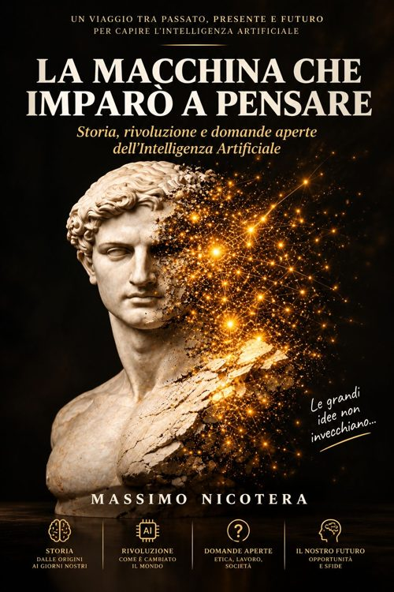
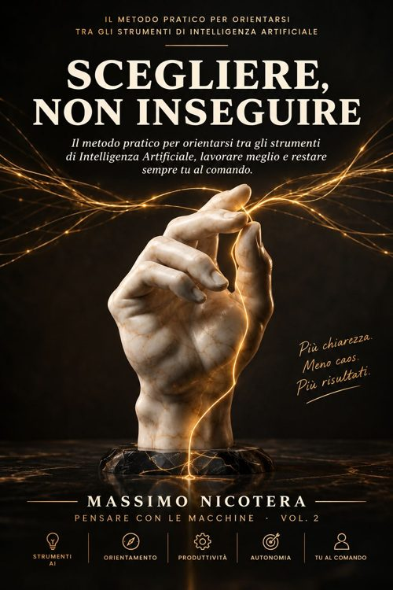

Camminando a 6 Zampe
Il racconto di un viaggio indimenticabile a sei zampe: diciassette anni di vita condivisa, in un cammino che non finisce mai. Romanzo autobiografico.
Vedi su AmazonLe opere di Massimo Nicotera pubblicate con Nicotera Publishing.
Il racconto di un viaggio indimenticabile a sei zampe: diciassette anni di vita condivisa, in un cammino che non finisce mai. Romanzo autobiografico.
Vedi su AmazonManuale tecnico su come analizzare e testare la sicurezza delle reti wireless con gli strumenti di Kali Linux, rivolto agli appassionati di sicurezza informatica.
Vedi su AmazonStorie vere delle nuove truffe digitali che colpiscono chi ami e dei meccanismi psicologici con cui i criminali conquistano la fiducia delle vittime.
Vedi su AmazonLe nuove truffe digitali che stanno cambiando il modo di ingannare: frodi sempre più sofisticate, personalizzate e difficili da riconoscere.
Vedi su Amazon
Storia, rivoluzione e domande aperte dell'Intelligenza Artificiale, dalle origini dell'idea di macchina pensante fino agli sviluppi più recenti.
Vedi su Amazon
Il metodo pratico per orientarsi tra gli strumenti di Intelligenza Artificiale, lavorare meglio e restare sempre tu al comando.
Vedi su AmazonLa guida pratica alla sicurezza digitale quotidiana per over 65: messaggi, banca online, acquisti, SPID e password, passo dopo passo.
Vedi su AmazonIl peso che può restare dentro di noi dopo la decisione più difficile per un animale che amiamo: una riflessione su responsabilità, senso di colpa e ricordo.
Vedi su Amazon